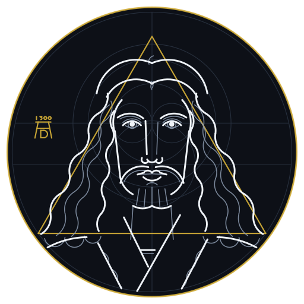

Albrecht Dürer¶

Albrecht Dürer (1471–1528), the Nuremberg master painter and printmaker, wrote Underweysung der Messung (Instruction in Measurement, 1525) to give artisans and architects a working manual of compass and straightedge. From Archimedean spirals and two-view conic projections to rusty-compass pentagons, Roman Antiqua lettering, and the first printed fold-out polyhedral nets in history, Dürer bridged Euclidean rigor and Renaissance workshop craft.
Books in This Collection¶
Nuremberg Edition · 1525 / Paris, 1532 · 4 Books · 4 Synchronized Tracks
Instruction in Measurement (Underweysung der Messung, mit dem Zirckel und Richtscheyt) — All four books transcribed in Early New High German and English alongside 11 calibrated interactive vector plates spanning conics, regular polygons, Roman capitals, polyhedral nets, and perspective apparatus.
Key Features¶
Four-Track Bilingual Witness
Read Dürer’s 1525 Nuremberg German alongside direct English translation, executive summaries, and scholarly notes referencing Camerarius’s 1532 Latin edition.
Workshop Craft & Polyhedral Nets
Inspect Book III’s modular Roman capitals and Gothic Textura minuscules alongside Book IV’s iconic planar fold-out nets for Platonic and Archimedean solids.
Exact Symbolic Audits
Executable SymPy models in Demos measure Dürer’s single-aperture “rusty compass” pentagon against Euclid’s \(\mathbb{Q}(\phi)\) construction (\(+21.97'\) discrepancy) and verify conic transfer symmetry.
Reference & Project¶
Scholarly Apparatus
People — Profiles of Albrecht Dürer, Willibald Pirckheimer, Joachim Camerarius, Luca Pacioli, and Piero della Francesca
Bibliography — 1525/1538 Nuremberg and 1532 Paris editions and scholarly apparatus
Concordance & Glossary — Cross-corpus links to Euclid, Apollonius, and Pacioli
About This Project
About — Editorial scope, symbolic field invariants, and provenance
Using This Edition — Track switching, navigation, and collection layout
Log & Modules — Development history and Python API reference